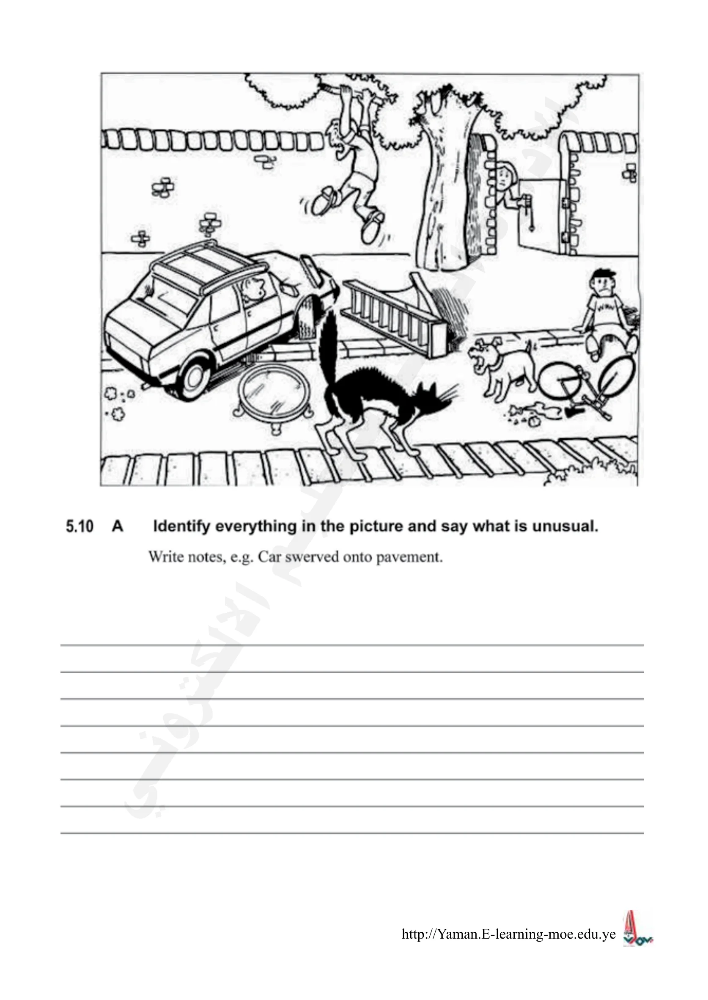

5.10 A Identify everything in the picture and say what is unusual. Write notes, e.g. Car swerved onto pavement. (WB p. 68) B Work out possible answers to the questions below. 1 Why did the cat jump onto the wall? 2 Why did the car drive onto the pavement? 3 Why is the man hanging from the tree? 4 Why did the ladder fall down? 5 What happened to the boy? 6 How did the bottle get broken? 7 Why is the table in the middle of the road? 8 Why is the saw lying on the bonnet of the car? C Work out the order in which you think things happened. D What conclusion do you come to? Discuss with your partner what must have happened.
[
{
"num": 1,
"question": "5.10 A — List the unusual things visible in the street scene",
"model_answer": "1) A car has swerved onto the pavement. 2) A saw is lying on the bonnet of the car. 3) A man is hanging by his hands from a tree branch. 4) A ladder has fallen down beside the tree. 5) A round table is lying upside down in the middle of the road. 6) A boy has fallen off his bicycle and a bottle is broken on the pavement. 7) A barking dog is facing an arched cat (with a frightened person peeking behind the garden door).",
"explain_ar": "جمع الملاحظات التمهيدي قبل التفسير السببي."
},
{
"num": 2,
"question": "B #1 Why did the cat jump onto the wall?",
"model_answer": "Because the barking dog chased it (or frightened it) along the pavement/wall.",
"explain_ar": "الكلب النابح يطارد القطة الفزعة."
},
{
"num": 3,
"question": "B #2 Why did the car drive onto the pavement?",
"model_answer": "The driver swerved onto the pavement to avoid hitting the dog, the cat, the boy on his bike, or the table in the road.",
"explain_ar": "انحراف اضطراري لتجنب الاصطدام في الشارع."
},
{
"num": 4,
"question": "B #3 & #4 Why is the man hanging from the tree, and why did the ladder fall down?",
"model_answer": "The man was standing on the ladder sawing a tree branch. When the car swerved onto the pavement, it knocked the ladder down, leaving the man hanging onto the branch!",
"explain_ar": "تسلسل مباشر يربط السلم بالسيارة وبالرجل المتدلي."
},
{
"num": 5,
"question": "B #5 & #6 What happened to the boy, and how did the bottle get broken?",
"model_answer": "The boy fell off his bicycle (after swerving or being startled by the car/dog), and the milk/glass bottle he was carrying fell and smashed on the ground.",
"explain_ar": "الدراجة المقلوبة والزجاجة المكسورة بجواره تؤكدان سقوطه."
},
{
"num": 6,
"question": "B #7 Why is the table in the middle of the road?",
"model_answer": "People may have put it outside to carry/load it (or in a house move / street sale) and it was knocked/rolled into the road — or the man hanging out from a window/door had set it outside.",
"explain_ar": "القرينة: طاولة مقلوبة وسليمة نسبياً في عرض الشارع."
},
{
"num": 7,
"question": "B #8 Why is the saw lying on the bonnet of the car?",
"model_answer": "When the ladder fell, the man dropped his saw while grabbing the tree branch, and it landed directly on the bonnet of the car underneath.",
"explain_ar": "المنشار سقط من يد الرجل المتعلق بالشجرة فوق مقدمة السيارة."
}
][
{
"label_ar": "1) الوضع قبل الحادث مباشرة (Past continuous / simple)",
"placeholder": "1. A man was standing on a ladder sawing a branch above the pavement.\n2. Meanwhile, someone had put a round table near the kerb, and a boy was riding his bike carrying a glass bottle."
},
{
"label_ar": "2) الشرارة المتسببة في الفوضى (Dog, cat, car swerves)",
"placeholder": "3. A dog chased a cat across the street and frightened the boy.\n4. The boy fell off his bike and dropped the bottle, while a passing car swerved onto the pavement to avoid hitting them/the table."
},
{
"label_ar": "3) النتيجة والوضع الراهن (must have conclusion for D)",
"placeholder": "5. The car must have knocked down the ladder beneath the tree.\n6. The man grabbed the branch to save himself and dropped his saw onto the car bonnet, while the onlooker ran back behind the garden door."
}
]{
"wb_ocr_vs_image": "طُوبقت صفحتا WB ص 67–68 مع wb-068.png وwb-069.png: قُصّت صورة لغز الشارع كاملةً أوفلاين (wb67_street_puzzle.webp) بدلاً من رموز OCR المشوّهة للرسم، وتُحقِّق من نصوص 5.10 A–D كافةً."
}